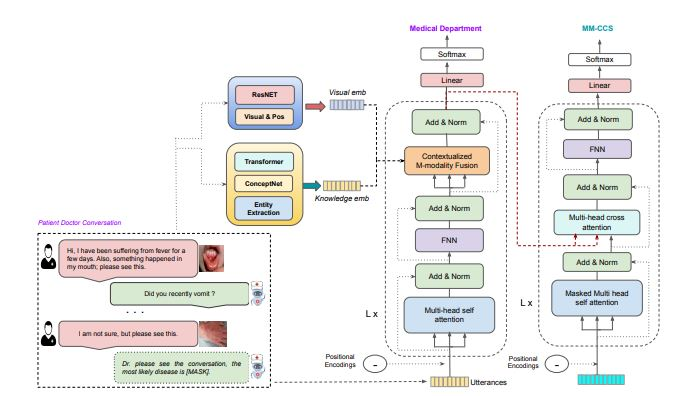
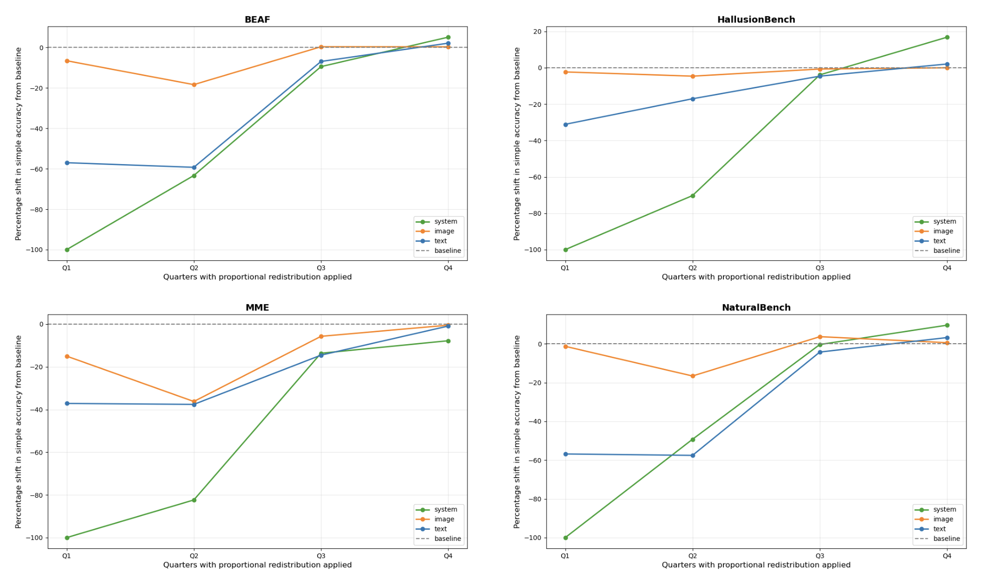
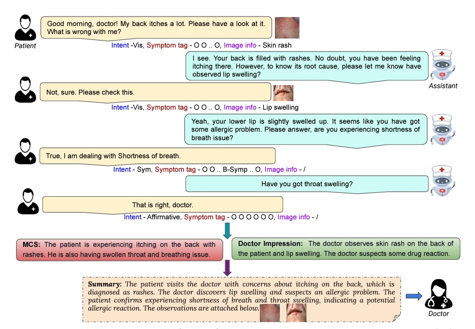
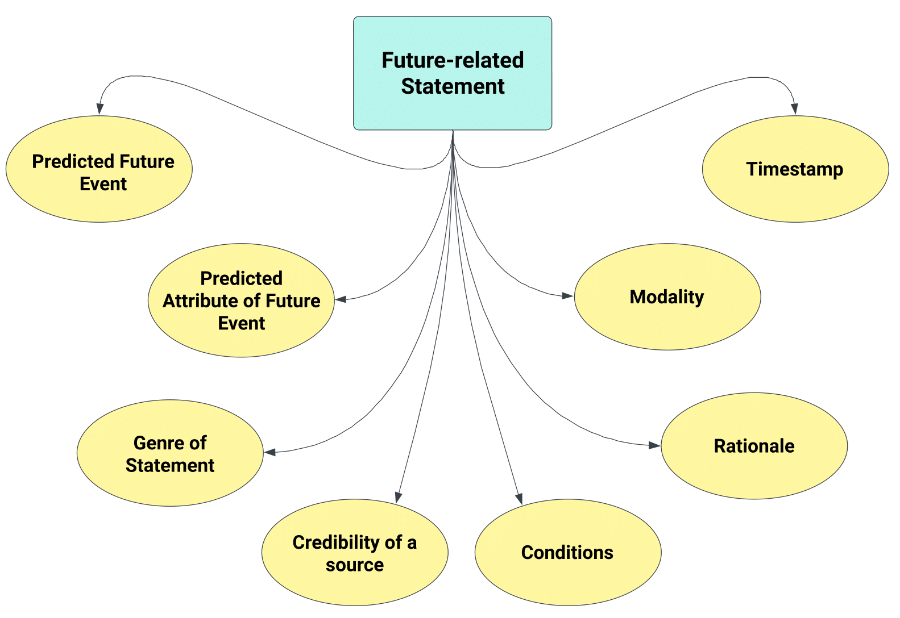

Publications

Experience and Evidence are the eyes of an excellent summarizer! Towards Knowledge Infused Multi-modal Clinical Conversation Summarization
Abhisek Tiwari, Anisha Saha, Sriparna Saha, Pushpak Bhattacharyya, Minakshi Dhar
CIKM '23: Proceedings of the 32nd ACM International Conference on Information and Knowledge Management
Preprints

System-Mediated Attention Imbalances Make Vision-Language Models Say Yes
Tsan Tsai Chan, Varsha Suresh, Anisha Saha, Michael Hahn, Vera Demberg

MUStReason: A Benchmark for Diagnosing Pragmatic Reasoning in Video-LMs for Multimodal Sarcasm Detection
Anisha Saha, Varsha Suresh, Timothy Hospedales, Vera Demberg


Wisdom of the Crowds in Forecasting: Forecast Summarization for Supporting Future Event Prediction
Anisha Saha, Adam Jatowt